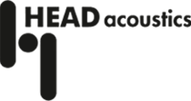
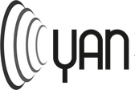
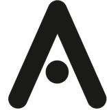
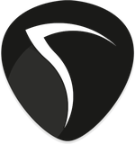

Abstract
I study how people hear new sources of noise — delivery drones, eVTOL aircraft, air-source heat pumps and the warning sounds of electric vehicles — once they arrive in places that already have a soundscape.
My Defra-funded PhD at the University of Salford builds auralised “future soundscapes” and plays them to listening juries. I use the responses to train neural networks that predict how a sound environment will be perceived, and to develop a psychoacoustic annoyance model that accounts for operational, environmental and contextual factors, automated through sound event detection.
I teach on the online MSc Computer Science suite at St Mary’s University, Twickenham, and have demonstrated environmental noise measurement and modelling at Salford. I sit on the Institute of Acoustics Scottish Branch and Early Careers Group committees and the Young Acousticians Network committee, and on NASA’s Unmanned Aircraft Systems Noise Working Group and the Noise Network Plus AI & Digital Working Group.
Research Collaborations
- PhD Sponsor
- PhD Placement
- PhD Placement

Journal Paper Journal Paper
Journal Paper- Journal Paper and Internship
Working Groups and Committees
- Working Group Member
- Working Group Member
- Scottish BranchCommittee Member
- Early Careers GroupCommittee Member

Committee Member
Publications and Projects
Publications
-
Pending
Multi-Model Analysis for Prediction of Perceived Annoyance from UAVs
Journal of the Acoustical Society of America (JASA).
-
Pending
Psychoacoustic Assessment of UAV Noise in Varying Ambiences, Operational Conditions and Contexts
Forum Acusticum 2026, Brussels.
-
Pending
Impacts on Soundscape Perception from eVTOL Flyovers in Existing Urban Ambiences
AIAA 2026, San Diego.
-
2026
Comparing a General Sound Quality Metric for Aircraft Noise Using a Pre-Trained Neural Network Model to Traditional Psychoacoustics
Quiet Drones 2026, Human Response to UAS and UAM Noise. With HEAD Acoustics GmbH.
-
2025
Comparison of Deep Learning and Psychoacoustic Models to Predict UAV Noise Impact in Soundscapes
Forum Acusticum EuroNoise 2025, 11th Convention of the European Acoustics Association, Málaga, pp. 2121–2127.
Projects
-
2026
Physical and Perceptual Dominance of Aircraft Noise Near an Expanding Airport
Field measurement campaign during a placement with Noise Consultants Ltd, alongside a validation of open-source noise measurements against Defra noise-mapping data.
-
2025–2028
Psychoacoustic Assessment and Machine Learning-Based Modelling of Novel Noise Source Perception in Complex Soundscapes
PhD thesis, University of Salford. Supervised by Prof. Antonio J. Torija Martínez and Dr Zuzanna Podwińska, with Hilary Notley and Dr Ruth Waite (Defra).
-
2024
MSc Dissertation, Computer Science with Artificial Intelligence
Abertay University. Awarded with distinction.
-
2023
Datasets of AI-Generated Electronic Music
Honours dissertation, University of Glasgow. Collated and analysed music produced with ChatGPT, Claude, AIVA and Jukebox.
Experience and Education
Experience
-
Aug 2026 – Oct 2026
PhD Placement, Acoustics
Noise Consultants Ltd, Logika Group — Warrington and Leeds
- Validated open-source noise measurements against modelled Defra noise-mapping data for infrastructure assessment.
- Ran a field campaign on an airport expansion project comparing physical and perceptual dominance of aircraft noise.
-
Apr 2026 – present
Scottish Branch Committee Member
Institute of Acoustics
-
Mar 2026 – present
Associate Lecturer, Computer Science
St Mary’s University, Twickenham — Remote
Teaching, marking and moderation across the online MSc Computer Science suite. Module reviewer and author.
-
Jan 2026 – Apr 2026
Teaching Assistant
University of Salford
Lab demonstrator for Environmental Noise Measurement and Modelling (BEng/MSc), including a practical assessment at Manchester Airport.
-
Jan 2025 – present
PhD Candidate
EPSRC CDT in Sustainable Sound Futures — Salford, Sheffield, Bristol, Southampton
- Auralises future soundscapes for jury tests on UAV, eVTOL, heat pump and AVAS noise.
- Trains neural networks on listener responses to predict perception.
- Develops a psychoacoustic annoyance model automated through sound event detection.
Education
-
2025 – 2028
PhD, Acoustics and Audio Engineering
University of Salford — Defra-funded, Year 2
-
2023 – 2024
MSc Computer Science with Artificial Intelligence
Abertay University — Distinction
-
2021 – 2023
BDes (Hons) Sound for Moving Image
University of Glasgow — 2:1
-
2019 – 2021
DipHE Music Technology
University of the West of Scotland — Distinction, Court Medal 2021
Certificates
- 2025
Digital Signal Processing
EPFL
- 2025
Trustworthy Generative AI
Vanderbilt University
- 2025
Transformer Models and BERT Model
Google
- 2025
Applications of AI in Acoustics
European Acoustics Association Summer School
- 2025
Ethics of Artificial Intelligence
Politecnico di Milano
- 2024
Advanced Prompt Engineering
Vanderbilt University
- 2024
PgCert AI for Noise Pollution Control
London School of International Business
Advanced R Programming
Johns Hopkins University
Responsible Research and Innovation
ORBITRRI
Software

